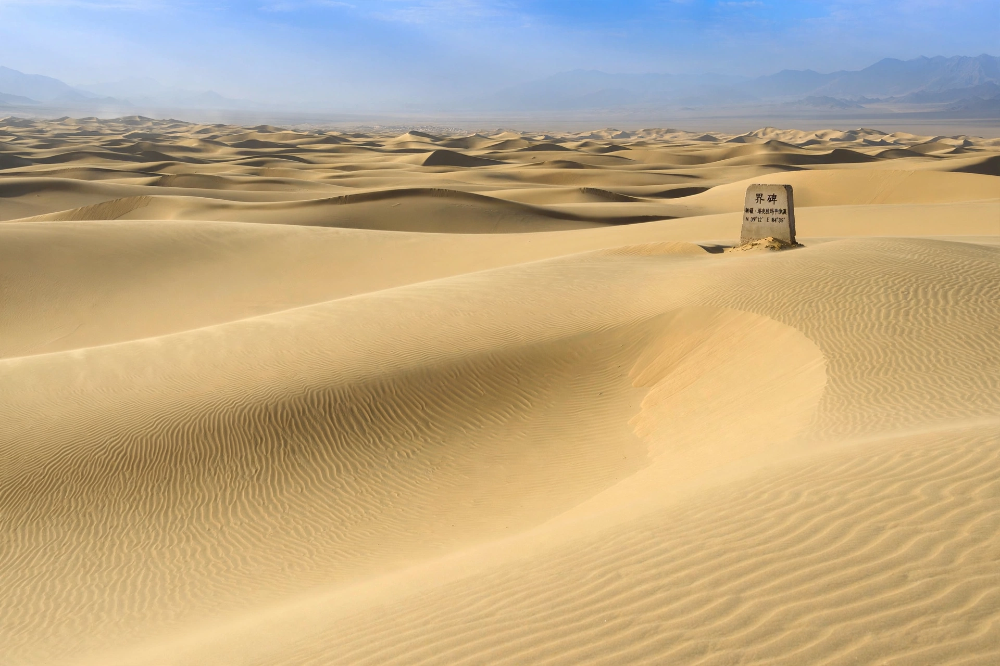

From Wikipedia, the free encyclopedia

A pole of inaccessibility with respect to a geographical criterion of inaccessibility marks the location that is the most challenging to reach according to that criterion. Often it is the point farthest from a coastline: the point on a landmass with the greatest distance to the ocean, or the point in an ocean farthest from any land.
The Eurasian pole of inaccessibility is the most famous example: it lies in the Gurbantünggüt Desert of Dzungaria, in China's Xinjiang region near the Dzungarian Gate, about 2,645 km from the nearest coastline. The North American pole lies in southwestern South Dakota, roughly 1,650 km from the sea; the South American pole is in Brazil near Arenápolis; the African pole is in the Central African Republic near the borders with South Sudan and the Democratic Republic of the Congo; and the Australian pole lies in the Northern Territory. Antarctica's pole of inaccessibility, in the interior far from the coast, was reached by a Soviet expedition in 1958, which established a temporary station there.
The oceanic pole of inaccessibility, known as Point Nemo, lies in the South Pacific Ocean at about 48°52.6′S 123°23.6′W, some 2,688 km from the nearest land (Ducie Island, Motu Nui off Easter Island, and Maher Island off Antarctica). It is so remote that the closest humans are usually astronauts aboard the International Space Station passing overhead. The surrounding region is used as a "spacecraft cemetery" where decommissioned satellites and stations, including Mir, have been brought down.
Computing a pole of inaccessibility requires accurate coastline data and an algorithm that maximises distance-to-coast over the landmass; published coordinates have been refined as datasets improved, notably by studies in 2007 and 2015 using global shoreline data.